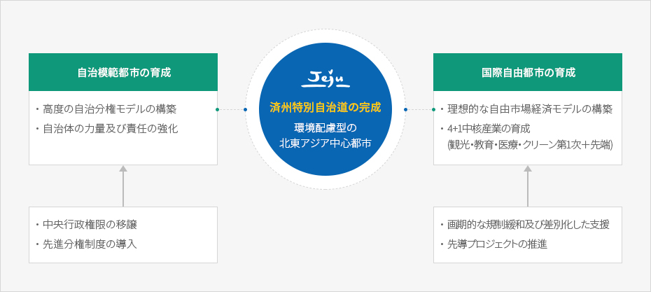

済州特別自治道
- Home
- 一般現況
- 行政・経済
- 済州特別自治道
韓国自治分権の先導モデル 済州特別自治道
特別自治道とは?
特別自治道とは一般の「道」に与えられた権限とは違った高度の自治権が保障された地域で、地域の環境と特性に合った特例が付与されており、自主的な政策の決定と責任の下で地域を経営する特別地域のことをいいます。
※ 特別自治道は広域地方自治体の一種で「地方自治法」第2条第1項に基づき、地方自治体は下記の二種類に区分します。
- 1. 特別市、広域市、特別自治市、道、特別自治道
- 2. 市、郡、区
済州特別自治道とは?
済州島の地域的・歴史的・人文的特性を生かし、自主と責任、創意性と多様性を基に高度の自治権が保証される済州特別自治道を設置して、実質的な地方分権を保障し、行政規制の幅広い緩和や国際的基準の適用及び環境資源の管理などを通じて経済と環境が調和をなす環境配慮型の国際自由都市を造成することで道民の福利増進と国の発展に資することを目的としています。済州特別自治道の発足
2006年2月9日、国会の本会議で「済州特別自治道の設置及び国際自由都市の造成のための特別法」が可決したことで、2006年7月1日から従来の「済州島」は「済州特別自治道」という新しい法的地位と名称を持つ地方自治体として発足しました。
これによって自治立法権をはじめ、自治行政権、自治組織・人事権及び自治財政権などの自治権を保有することになりました。なお、他の一般自治体とは違って教育自治制度が一般自治に統合され、自治警察制が導入されるなど先進的な地方分権モデルを構築しています。
済州特別自治道の現況
特別自治道発足後の10年間で4,660件の中央権限が移譲され、済州型自治制度が作られています。これを通じて観光産業をはじめとする教育及び医療産業、クリーン第1次産業、先端産業など済州地域の中核産業の育成とエコ産業の発展の土台にし、国際化及び地方分権の先導的なロールモデルを実現しています。 済州特別自治道の基本構想


済州特別自治道の完成 - 環境配慮型の北東アジア中心都市
-
自治模範都市の育成
- 高度の自治分権モデルの構築
- 自治体の力量及び責任の強化
- 中央行政権限の移譲
- 先進分権制度の導入
-
国際自由都市の育成
- 理想的な自由市場経済モデルの構築
- 4+1中核産業の育成(観光・教育・医療・クリーン第1次＋先端)
- 画期的な規制緩和及び差別化した支援
- 先導プロジェクトの推進